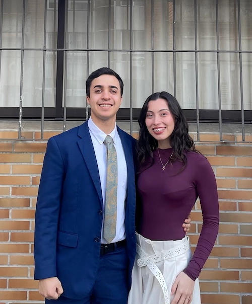

Home
About Me
I am a passionate programming student. I love solving problems and finding the best solutions for them. Front End Development is not either my strong area or the thing that I like the most, but I know that it is part of the journey. I am currently engaged to a wonderful woman called Lucia Soria, I love her a lot, she is a real blessing in my life, we are getting married on febrary 19th 2027.
Student Photo

Web Certificate Courses
The total number of credits for the courses listed above is